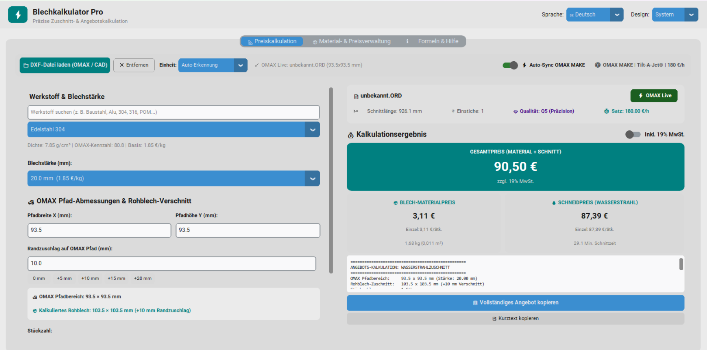
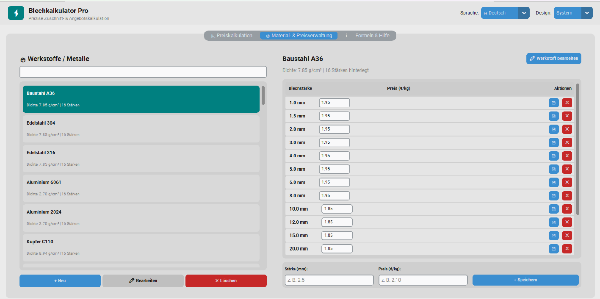

Die blitzschnelle Desktop-Lösung für Lohnfertiger & Wasserstrahlschneider. Automatische DXF-Pfaderkennung, 100% präzise Schneidzeit-Übernahme und 1-Klick-Angebote für ERP oder E-Mail.

Sehen Sie in der Live-Aufzeichnung, wie Blechkalkulator Pro Zeichnungen, Werkstoffe, Pfadmaße und Schneidzeiten aus OMAX® MAKE in Sekundenschnelle synchronisiert.
Keine verschachtelten Menüs oder tagelange Schulungen. Ein einziger Bildschirm führt dich vom DXF-File zum fertigen Angebotspreis.
Blechkalkulator Pro erfasst millimetergenau den realen Werkzeugbahn-Fahrbereich (inklusive Tool-Offset und Einstichfahnen kompatibler CNC-/Wasserstrahl-Dateien) und rechnet den optimalen Rohblech-Zuschnitt automatisch aus.

Verwalte all deine Metalle (Baustahl, Edelstahl 304/316, Alu, Kupfer, Messing, Titan etc.) mit spezifischen Dichten, Schnittkennwerten und individuellen Kilopreisen pro Blechstärke.
Sobald in OMAX MAKE ein Teil geladen oder der Maschinensatz angepasst wird, kann Blechkalkulator Pro die Schnittdaten im Hintergrund in Echtzeit auslesen.
Erkennt automatisch die geöffnete Zeichnung und liest Schnittlänge, Einstiche und Qualitätsstufen (Q1–Q5) fehlerfrei aus.
Liest den tatsächlichen Maschinen-Stundensatz und die kalkulierte Schnittzeit direkt aus den Schnittdaten-Präferenzen ohne manuelle Tippfehler.
Kopiert formatierte Angebotspositionen (ausführlich oder kompakt) direkt in die Zwischenablage für Ihr ERP-System, E-Mail oder Word.
Ein ehrlicher Vergleich mit klassischen Tabellenkalkulationen und komplexen ERP-Systemen.
| Funktion | Excel / Tabellen | Große ERP-Systeme | Blechkalkulator Pro |
|---|---|---|---|
| Kalkulationszeit | 10 – 15 Minuten | 5 – 10 Minuten | Unter 5 Sekunden |
| Schnittdaten-Sync (OMAX®-kompatibel) | Nicht vorhanden | Teure Schnittstelle | Voll integriert |
| Einarbeitungszeit | Komplizierte Formeln | Mehrtägige Schulung | Sofort intuitiv (0 Min.) |
| Datenschutz & Datenhaltung | Lokal | Oft Fremd-Cloud | 100% Offline-First |
| Preis / Lizenzmodell | Office-Abonnement | 5.000 € – 25.000 € + Mtl. | Faire Einmallizenz |
Teste die Software 7 Tage unverbindlich auf deinem Windows-PC oder fordere ein individuelles Lizenzangebot an.